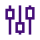
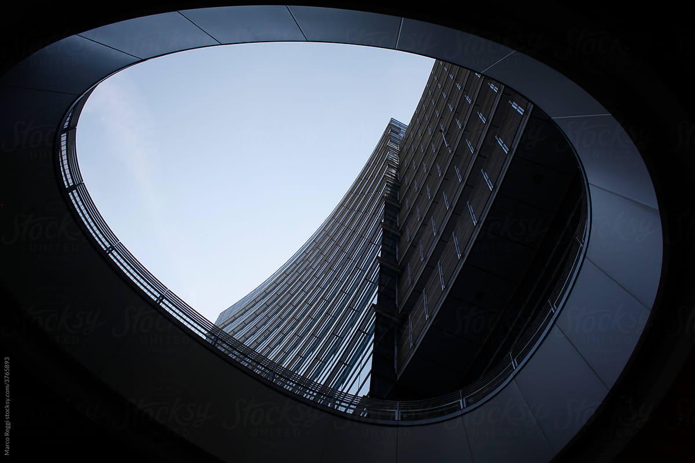

Ondo Network
Fast, private execution. Independently verifiable rules. Assets that remain yours to control.
What is Ondo Network
Ondo Network separates execution from settlement to meet financial applications' needs.

Ondo Network's first live application brings its infrastructure to perpetual futures trading.
Secure hardware runs applications while independent attestors verify the approved code.
Asset transfers settle on public blockchains, confirmed by attestors.
Benefits
Execute at speeds approaching centralized exchanges, matching in milliseconds.
Keep sensitive positions and order flow off public ledgers and out of view.
Let approved third parties check that execution followed the rules, step by step.
No single operator can move user funds alone. Assets remain yours to control.
Multiple attestors already running; more can join as Network activity grows.
How it compares
How it works
See it in action
Ondo Network’s first live application brings its infrastructure to perpetual futures trading.
Explore Ondo Perps
What will you build next?
Explore what Ondo Network could enable for your application.